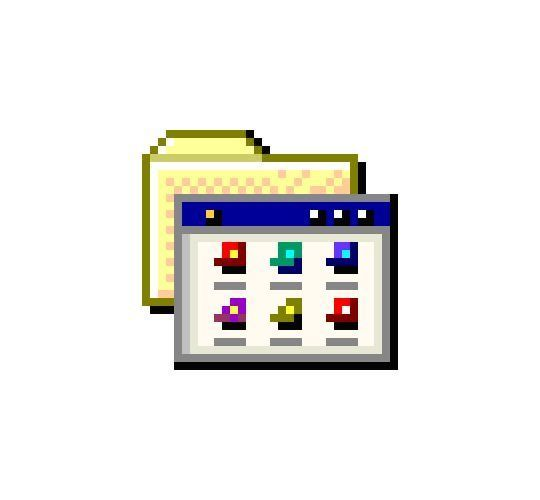

Smart Traffic Light System
Overview: A hardware and software prototype built to automate and optimize city intersection delays.
How it works: Using an Arduino micro-controller, infrared sensors detect when a car queue forms, dynamically forcing the light signals to shift times to reduce vehicle idling.
Not available / In development
Retro Portfolio Website
Overview: A fully custom personal portfolio designed to showcase projects using early operating system visuals.
How it works: Built from scratch using modern CSS Grid and Flexbox layouts. Features clean web semantics, custom keyframe animation sliders, and responsive mobile adaptation rules.
In Progress